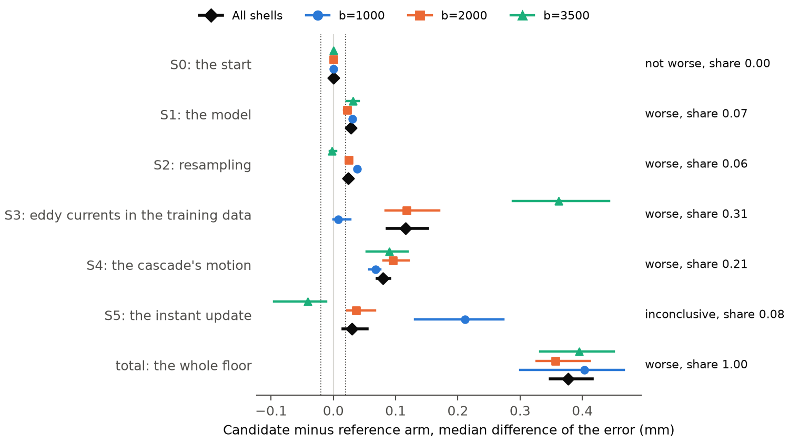
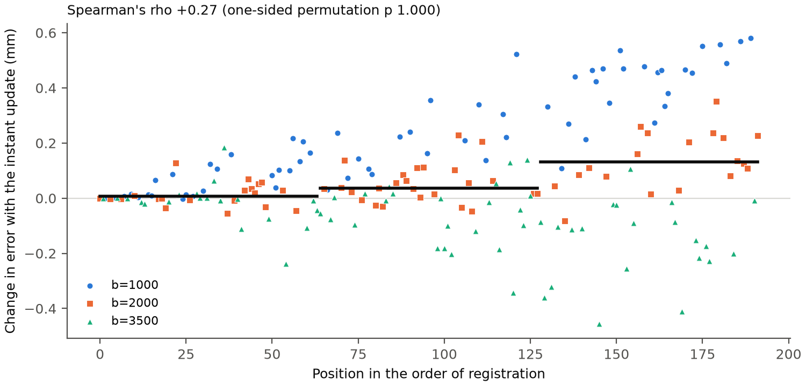
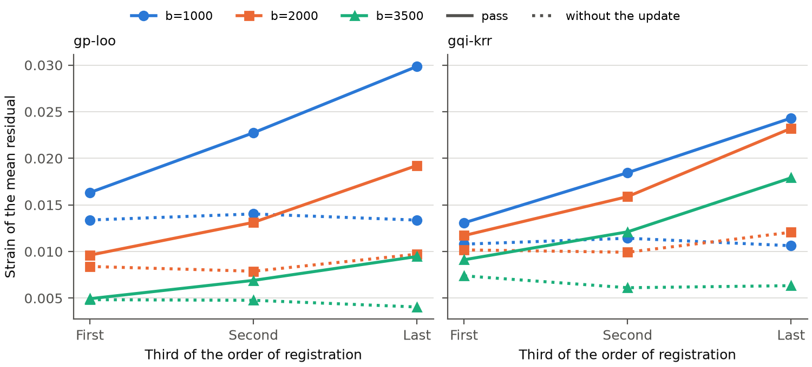
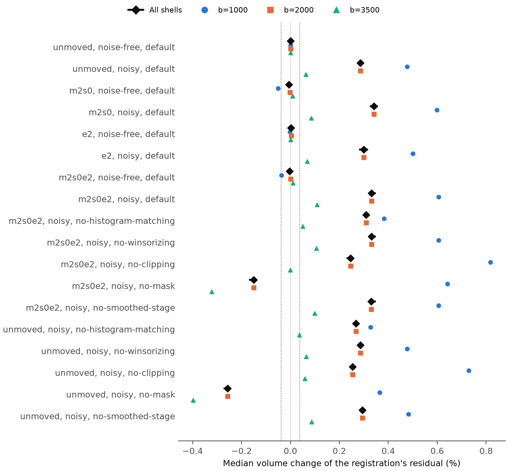
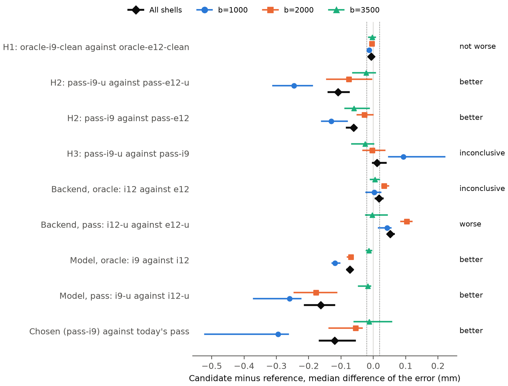
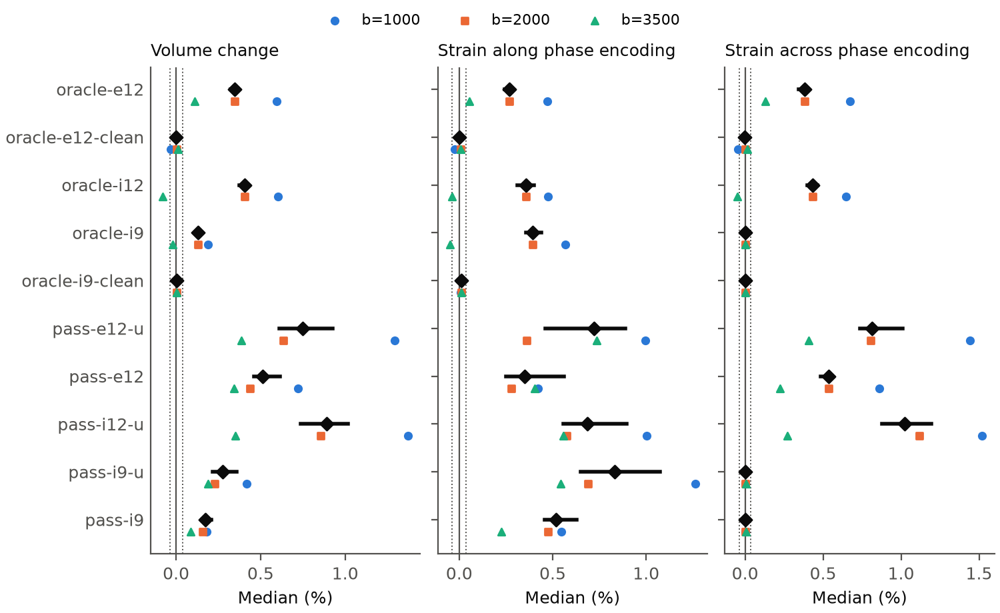
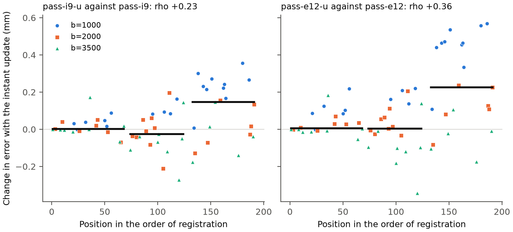
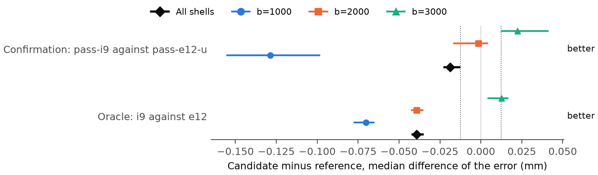

The targets of the eddy-current pass¶
NiFreeze estimates head motion with a cascade of models (here --models gqi-krr
gp-loo, each level a rigid registration of every volume to the model’s held-out
prediction of it), then estimates eddy currents with one more pass (--eddy).
That pass registers each diffusion-weighted volume, with an affine, to a model’s
held-out prediction, starting from the cascade’s head motion.
Its result is the whole mapping of the volume: the estimate of how the reference maps
into it, head motion and eddy currents composed.
In the end-to-end test of #712, the pass left a median largest displacement of 1.185 to 1.648 mm of eddy currents on the three shells (the reproduction table below), and at b=1000 the whole mapping ended further from the truth than without the pass (#721). Three tests on #723 follow that error, each under rules posted before its run:
- Test 1
It splits the pass’s error into steps, from an oracle to the pass. No single step accounts for most of it. The pass drifts: its registrations share an expansion, which the instant update (each volume, once registered, enters the model’s training data realigned) feeds back into the targets.
- Test 2
It asks why the registrations expand, and finds the noise in the moving volume.
- Test 3
It asks whether a registration with 9 parameters, head motion and a field along phase encoding, does better than the affine, and whether the pass can then keep the instant update. It does better, in the same or less time, most at b=1000; and the rules chose the delayed update for its pass, which applies its estimates only after the pass. On HCP-YA that pass still beats today’s, but by little (0.019 mm), and it is worse at b=3000.
Test 1: what the targets carry¶
The floor is the pass’s error minus the oracle’s, on the mean error of the whole mapping defined below.
The question¶
Do the targets of the eddy-current pass carry the eddy currents it should correct? The working hypothesis asked two questions:
Which step from the oracle to the pass makes the floor? Hypothesis 1 said: the eddy currents that the training data still carry.
Hypothesis 2: does the pass’s benefit from the instant update grow with a volume’s position in the order of registration? With the instant update (Design Principles), each volume, once registered, enters the models’ training data resampled with its estimate, so later volumes get targets drawn from more corrected volumes. The order is random, drawn from the run’s seed, and the same in every level of the cascade and in the pass.
Data¶
- The copy
Sherbrooke
m2s0e2(Synthetic reference data): 192 diffusion-weighted volumes at 2 mm, in three shells (b=1000, 2000 and 3500) that share the same 64 directions. Every volume moved by 2 mm and 2° (motion seed 0), then was distorted by eddy currents of up to 4 mm within the brain. It carries the noise of the end-to-end test (seed 20261020).- The truth
Each volume’s head motion
M, from the sidecar, and its eddy currentsE, frommatrices()(#724). The volume shows atE M xwhat the reference shows atx(The error audit). The field is linear in position and in the q-vector: its coefficients are0.0265 × (b / 1000) × g, so along the same direction the field at b=2000 and b=3500 is 2 and 3.5 times the field at b=1000.- The cascade
gqi-krr, then gp-loo, rigid, with elastix and seed 12345, run once, as the command line chains them. Its head motion
m̂is the start of the arms that start from the cascade.
The arms¶
Each arm registers the copy’s noisy volume, for all 192 volumes, to a target and from a
start, with the pass’s settings (AFFINE, elastix,
one thread, seed 12345).
Every target but the oracle’s is a held-out prediction
(held_out_predictions()), by gp-loo and by gqi-krr:
a weighted sum of the other volumes of a realigned copy of the data
(realigned()), with the listed estimates applied.
Arm |
Target |
Start |
|---|---|---|
|
the noise-free reference volume |
|
|
the noise-free reference volume |
|
|
prediction from the noisy reference (no motion, no eddy currents) |
|
|
prediction from the copy realigned by its true mapping |
|
|
prediction from the copy realigned by |
|
|
prediction from the copy realigned by |
|
|
the pass itself ( |
|
How the results are judged¶
The error of a registration is its estimated whole mapping W against the truth
E M: the mean, within the brain mask, of
displacements_within_mask(), in the frame of the
arm’s targets.
The targets predicted from data realigned by m̂ (cascade-corrected and pass)
sit in the cascade’s frame, so those arms have the cascade’s common offset removed:
the transform that all of m̂ shares against M (its mean rotation and
translation, as the end-to-end test computes it).
The other arms have nothing removed.
Beside this error are reported the largest displacement, the eddy-current score of
#712 (eddy M against E M, with eddy = W m̂⁻¹ the estimate with its start
factored out), the whole mapping with each arm’s own common offset removed, and κ, the
fraction of each volume’s field that the whole mapping recovers (by least squares over
the brain’s points).
Each step compares two arms with experiments.paired_comparison(): candidate minus
the other arm, paired by volume, with a margin of 0.01 voxel (0.02 mm), over all volumes
(resampled within shells) and within each shell.
From the 95% interval of the median difference, a step is “worse” if the interval lies
above the margin, “better” if it lies below zero with the median below the negative
margin, “not worse” if its upper bound is below the margin, and “inconclusive”
otherwise.
Step |
Measures |
Candidate |
Against |
|---|---|---|---|
S0 |
the start |
|
|
S1 |
the model’s prediction |
|
|
S2 |
resampling of the training data |
|
|
S3 |
the eddy currents in the training data |
|
|
S4 |
the cascade’s motion error, in the training data and the start |
|
|
S5 |
the instant update |
|
|
Total |
the floor |
|
|
The working hypothesis (posted on #723) set two rules, on gp-loo:
- Question 1
A step makes the floor if it is “worse” over all volumes and within every shell, and its median difference is at least half the total’s; if more than one does, the largest decides. S3 would mean the targets carry the field: Test 2 then tries targets free of it, starting with the pass repeated on its corrected view, and #591 waits for Test 2. S1 would send Test 2 to the choice of model, and S4 to the coupling of the motion and eddy-current passes (E3b in #614). If no step reaches half, Test 2 takes the largest step that is “worse”.
- Question 2
With
g = e(pass) − e(cascade-corrected)the change in each volume’s error that the instant update makes (negative where it helped; the posted rules call it the gain) andrthe volume’s position in the order, hypothesis 2 holds if Spearman’s ρ(r, g) is below zero (one-sided permutation p below 0.05) and the mediangof the last third of the order is below the first third’s, with the bootstrap interval of the difference entirely below the negative margin. If it holds, Test 2 starts with the pass repeated; if not, with targets that leave out the volumes along the same direction. This rule sets which of Test 2’s tries comes first.
The checks, posted with the rules: the truth must apply within 1e-9 mm, the pass’s and
cascade-corrected’s estimates of the first volume of the order must agree within
0.01 mm (both have the same target and start there), and the pass and the cascade must
reproduce #721’s run within 0.05 mm on every median of the end-to-end test’s scores.
Results¶
By the rules, no step makes the floor, and hypothesis 2 fails in the opposite direction: the instant update makes the pass worse the later a volume comes. The answer to the question is partly yes: the targets carry part of the field at b=2000 and b=3500, but not at b=1000.
Question 1¶
The floor is +0.377 mm with gp-loo. Its largest step is S3, the eddy currents in the training data (+0.116 mm, 31% of the floor): “worse” at b=2000 and b=3500, but inconclusive at b=1000, so it does not make the floor. S4, the cascade’s motion error, is “worse” on every shell (+0.079 mm, 21%). The start (S0) changes nothing: from either start, the registration to a perfect target ends as close to the truth. At b=1000, most of the floor comes from S5, the instant update (+0.212 of +0.403 mm); at b=3500, S5 is “better” (−0.042 mm).
No step reaches half, so by the fallback Test 2 takes the largest step that is “worse”: S3, reading “worse” as the verdict over all volumes (the decision script’s reading). Reading it as “worse” over all volumes and within every shell, as the rule for making the floor does, only S4 qualifies, and Test 2 would go to the coupling of the passes instead. The posted rules do not say which reading holds.


Fig. 19 Each step’s median difference of the error, with its 95% interval, over all volumes (diamonds) and within each shell, for gp-loo. The dotted lines are the margin on either side of zero: a step is “worse” where its interval lies right of the right one. The text on the right gives the verdict over all volumes and the step’s share of the floor.¶
Step |
Measures |
All volumes (mm) |
b=1000 (mm) |
b=2000 (mm) |
b=3500 (mm) |
Share |
Holm p |
|---|---|---|---|---|---|---|---|
S0 |
the start |
+0.000 [+0.000, +0.000] not worse |
+0.000 [+0.000, +0.000] not worse |
+0.000 [+0.000, +0.000] not worse |
+0.000 [-0.001, +0.001] not worse |
0.00 |
9.8e-01 |
S1 |
the model |
+0.028 [+0.025, +0.030] worse |
+0.031 [+0.028, +0.032] worse |
+0.022 [+0.017, +0.027] inconclusive |
+0.032 [+0.021, +0.040] worse |
0.07 |
5.4e-28 |
S2 |
resampling |
+0.024 [+0.022, +0.027] worse |
+0.038 [+0.036, +0.040] worse |
+0.025 [+0.023, +0.029] worse |
-0.003 [-0.006, +0.004] not worse |
0.06 |
3.7e-20 |
S3 |
eddy currents in the training data |
+0.116 [+0.086, +0.151] worse |
+0.008 [+0.000, +0.027] inconclusive |
+0.118 [+0.084, +0.170] worse |
+0.362 [+0.288, +0.443] worse |
0.31 |
2.7e-27 |
S4 |
the cascade’s motion |
+0.079 [+0.070, +0.090] worse |
+0.068 [+0.058, +0.076] worse |
+0.096 [+0.081, +0.121] worse |
+0.090 [+0.053, +0.119] worse |
0.21 |
2.0e-29 |
S5 |
the instant update |
+0.030 [+0.016, +0.054] inconclusive |
+0.212 [+0.131, +0.274] worse |
+0.037 [+0.022, +0.067] worse |
-0.042 [-0.095, -0.012] better |
0.08 |
2.8e-07 |
total |
the whole floor |
+0.377 [+0.348, +0.416] worse |
+0.403 [+0.300, +0.466] worse |
+0.357 [+0.326, +0.412] worse |
+0.395 [+0.333, +0.451] worse |
1.00 |
2.1e-32 |
Question 2¶
The instant update’s change in error grows with the order instead of shrinking: ρ(r, g) is +0.27 with gp-loo and +0.51 with gqi-krr. With gp-loo, the median change goes from +0.008 mm in the first third of the order to +0.131 mm in the last. The pass’s error rises with the order at b=1000 and b=2000, and shows no trend at b=3500.


Fig. 20 The change in each volume’s error that the instant update makes (pass minus
cascade-corrected, gp-loo), against the volume’s position in the order of
registration.
Above zero, the update made the volume worse; the black segments are each third’s
median.
The first volume of the order has the same target and start in both arms, so its
change is zero.¶
Model |
Spearman’s rho |
One-sided p (rho < 0) |
Two-sided p |
First third (mm) |
Last third (mm) |
Difference (mm) |
Holds |
|---|---|---|---|---|---|---|---|
gp-loo |
+0.27 |
1.00 |
2.0e-04 |
+0.008 |
+0.131 |
+0.123 [+0.060, +0.237] |
no |
gqi-krr |
+0.51 |
1.00 |
2.2e-14 |
+0.018 |
+0.213 |
+0.194 [+0.123, +0.263] |
no |
Pass |
b=1000 |
b=2000 |
b=3500 |
|---|---|---|---|
gp-loo |
+0.87 (p 7.5e-21) |
+0.55 (p 2.3e-06) |
-0.14 (p 2.7e-01) |
gqi-krr |
+0.88 (p 4.8e-22) |
+0.65 (p 4.4e-09) |
+0.12 (p 3.4e-01) |
Checks¶
All three hold.
The truth applies to 5.7e-14 mm within the brain.
The pass’s and cascade-corrected’s estimates of the first volume of the order agree
to 3e-14 mm (gp-loo) and 5e-14 mm (gqi-krr).
The pass and the cascade reproduce #721’s run within 0.043 mm on every median.
Score |
Shells |
This run (mm) |
#721 (mm) |
Difference (mm) |
|---|---|---|---|---|
eddy_currents |
all |
1.344 |
1.338 |
+0.006 |
eddy_currents |
b=1000 |
1.248 |
1.263 |
-0.014 |
eddy_currents |
b=2000 |
1.199 |
1.185 |
+0.014 |
eddy_currents |
b=3500 |
1.629 |
1.648 |
-0.019 |
whole |
all |
1.268 |
1.273 |
-0.006 |
whole |
b=1000 |
1.389 |
1.392 |
-0.002 |
whole |
b=2000 |
1.253 |
1.250 |
+0.003 |
whole |
b=3500 |
1.211 |
1.244 |
-0.033 |
head_motion |
all |
0.741 |
0.747 |
-0.006 |
head_motion |
b=1000 |
0.557 |
0.560 |
-0.003 |
head_motion |
b=2000 |
0.732 |
0.736 |
-0.003 |
head_motion |
b=3500 |
1.153 |
1.196 |
-0.043 |
Reported, not used in the decision¶
With the field left in the training data and the true start (motion-corrected), the
whole mapping recovers κ = 0.91 of the field at b=1000, and 0.69 at b=2000 and b=3500.
The opening of #723 predicted that this fraction grows with b and is lowest at b=1000;
it is highest at b=1000 and does not grow.
At b=1000, the pass recovers about the same fraction of the field as its starting
targets (κ 0.88 against 0.91, gp-loo), while its error rises from 0.48 to 0.71 mm: the
error that the instant update adds is mostly not along the field.
gqi-krr gives the same steps in the same order (S3 its largest, +0.105 mm, 26%), but its S5 is “worse” over all volumes (+0.069 mm, 17%), where gp-loo’s is inconclusive.
The head-motion error of the cascade’s first level (gqi-krr, from unaligned data) falls with the order; that of its second level (gp-loo, from data the first level aligned) does not. No cascade ran without the instant update, so whether the update causes that fall is not tested.
Cascade level |
Spearman’s rho |
p |
|---|---|---|
1: gqi-krr |
-0.22 |
2.4e-03 |
2: gp-loo |
-0.01 |
8.7e-01 |
Model |
Same-direction volumes registered before |
Volumes |
Median change (mm) |
|---|---|---|---|
gp-loo |
0 |
64 |
+0.009 |
gp-loo |
1 |
64 |
+0.035 |
gp-loo |
2 |
64 |
+0.128 |
gqi-krr |
0 |
64 |
+0.020 |
gqi-krr |
1 |
64 |
+0.069 |
gqi-krr |
2 |
64 |
+0.199 |
Step |
Measures |
All volumes (mm) |
b=1000 (mm) |
b=2000 (mm) |
b=3500 (mm) |
Share |
Holm p |
|---|---|---|---|---|---|---|---|
S0 |
the start |
+0.000 [+0.000, +0.000] not worse |
+0.000 [+0.000, +0.000] not worse |
+0.000 [+0.000, +0.000] not worse |
+0.000 [-0.001, +0.001] not worse |
0.00 |
9.8e-01 |
S1 |
the model |
+0.052 [+0.048, +0.056] worse |
-0.060 [-0.065, -0.058] better |
+0.062 [+0.055, +0.067] worse |
+0.075 [+0.061, +0.100] worse |
0.13 |
1.9e-06 |
S2 |
resampling |
+0.037 [+0.034, +0.039] worse |
+0.043 [+0.040, +0.045] worse |
+0.038 [+0.035, +0.042] worse |
+0.015 [+0.009, +0.022] inconclusive |
0.09 |
5.9e-29 |
S3 |
eddy currents in the training data |
+0.105 [+0.082, +0.133] worse |
+0.018 [+0.010, +0.030] inconclusive |
+0.112 [+0.077, +0.161] worse |
+0.244 [+0.186, +0.363] worse |
0.26 |
2.6e-29 |
S4 |
the cascade’s motion |
+0.066 [+0.062, +0.074] worse |
+0.055 [+0.047, +0.061] worse |
+0.085 [+0.067, +0.099] worse |
+0.074 [+0.055, +0.093] worse |
0.17 |
1.0e-30 |
S5 |
the instant update |
+0.069 [+0.044, +0.093] worse |
+0.144 [+0.114, +0.223] worse |
+0.056 [+0.029, +0.104] worse |
+0.000 [-0.013, +0.023] inconclusive |
0.17 |
2.3e-16 |
total |
the whole floor |
+0.399 [+0.356, +0.429] worse |
+0.272 [+0.197, +0.324] worse |
+0.422 [+0.366, +0.453] worse |
+0.500 [+0.427, +0.538] worse |
1.00 |
2.2e-32 |
Arm |
Model |
All |
b=1000 |
b=2000 |
b=3500 |
|---|---|---|---|---|---|
oracle |
none |
0.19 / 0.37 |
0.32 / 0.56 |
0.19 / 0.36 |
0.13 / 0.27 |
oracle-cascade |
none |
0.19 / 0.37 |
0.32 / 0.56 |
0.19 / 0.36 |
0.13 / 0.27 |
reference |
gp-loo |
0.21 / 0.43 |
0.35 / 0.61 |
0.21 / 0.41 |
0.16 / 0.33 |
corrected |
gp-loo |
0.24 / 0.47 |
0.39 / 0.69 |
0.24 / 0.46 |
0.16 / 0.34 |
motion-corrected |
gp-loo |
0.41 / 0.84 |
0.39 / 0.75 |
0.36 / 0.82 |
0.52 / 1.42 |
cascade-corrected |
gp-loo |
0.50 / 1.06 |
0.48 / 0.94 |
0.47 / 1.02 |
0.58 / 1.45 |
pass |
gp-loo |
0.57 / 1.22 |
0.71 / 1.36 |
0.55 / 1.20 |
0.51 / 1.16 |
reference |
gqi-krr |
0.24 / 0.47 |
0.26 / 0.46 |
0.25 / 0.48 |
0.21 / 0.45 |
corrected |
gqi-krr |
0.28 / 0.53 |
0.30 / 0.55 |
0.29 / 0.55 |
0.23 / 0.47 |
motion-corrected |
gqi-krr |
0.38 / 0.85 |
0.32 / 0.64 |
0.41 / 0.89 |
0.46 / 1.18 |
cascade-corrected |
gqi-krr |
0.47 / 1.01 |
0.39 / 0.79 |
0.51 / 1.09 |
0.55 / 1.28 |
pass |
gqi-krr |
0.60 / 1.25 |
0.58 / 1.14 |
0.60 / 1.29 |
0.63 / 1.31 |
Arm |
Model |
All |
b=1000 |
b=2000 |
b=3500 |
|---|---|---|---|---|---|
oracle |
none |
0.20 / 0.40 |
0.33 / 0.63 |
0.20 / 0.40 |
0.13 / 0.27 |
oracle-cascade |
none |
0.20 / 0.40 |
0.33 / 0.63 |
0.20 / 0.40 |
0.12 / 0.28 |
reference |
gp-loo |
0.23 / 0.47 |
0.36 / 0.67 |
0.22 / 0.43 |
0.17 / 0.36 |
corrected |
gp-loo |
0.26 / 0.50 |
0.40 / 0.76 |
0.25 / 0.50 |
0.18 / 0.35 |
motion-corrected |
gp-loo |
0.42 / 0.88 |
0.40 / 0.78 |
0.37 / 0.85 |
0.53 / 1.46 |
cascade-corrected |
gp-loo |
0.52 / 1.07 |
0.50 / 0.99 |
0.48 / 1.05 |
0.60 / 1.45 |
pass |
gp-loo |
0.61 / 1.27 |
0.74 / 1.39 |
0.58 / 1.25 |
0.54 / 1.21 |
reference |
gqi-krr |
0.26 / 0.51 |
0.27 / 0.52 |
0.26 / 0.52 |
0.22 / 0.48 |
corrected |
gqi-krr |
0.29 / 0.59 |
0.31 / 0.62 |
0.30 / 0.59 |
0.25 / 0.53 |
motion-corrected |
gqi-krr |
0.39 / 0.85 |
0.34 / 0.68 |
0.42 / 0.89 |
0.45 / 1.19 |
cascade-corrected |
gqi-krr |
0.48 / 1.01 |
0.41 / 0.83 |
0.52 / 1.08 |
0.58 / 1.31 |
pass |
gqi-krr |
0.63 / 1.28 |
0.59 / 1.16 |
0.64 / 1.33 |
0.66 / 1.40 |
Arm |
Model |
All |
b=1000 |
b=2000 |
b=3500 |
|---|---|---|---|---|---|
oracle |
none |
0.19 / 0.37 |
0.32 / 0.56 |
0.19 / 0.36 |
0.13 / 0.27 |
oracle-cascade |
none |
0.67 / 1.20 |
0.64 / 1.18 |
0.64 / 1.07 |
0.85 / 1.36 |
reference |
gp-loo |
0.21 / 0.43 |
0.35 / 0.61 |
0.21 / 0.41 |
0.16 / 0.33 |
corrected |
gp-loo |
0.24 / 0.47 |
0.39 / 0.69 |
0.24 / 0.46 |
0.16 / 0.34 |
motion-corrected |
gp-loo |
0.41 / 0.84 |
0.39 / 0.75 |
0.36 / 0.82 |
0.52 / 1.42 |
cascade-corrected |
gp-loo |
0.50 / 1.09 |
0.44 / 0.87 |
0.48 / 1.01 |
0.74 / 1.73 |
pass |
gp-loo |
0.65 / 1.34 |
0.69 / 1.25 |
0.57 / 1.20 |
0.71 / 1.63 |
reference |
gqi-krr |
0.24 / 0.47 |
0.26 / 0.46 |
0.25 / 0.48 |
0.21 / 0.45 |
corrected |
gqi-krr |
0.28 / 0.53 |
0.30 / 0.55 |
0.29 / 0.55 |
0.23 / 0.47 |
motion-corrected |
gqi-krr |
0.38 / 0.85 |
0.32 / 0.64 |
0.41 / 0.89 |
0.46 / 1.18 |
cascade-corrected |
gqi-krr |
0.51 / 1.08 |
0.38 / 0.76 |
0.51 / 1.08 |
0.76 / 1.71 |
pass |
gqi-krr |
0.67 / 1.36 |
0.58 / 1.09 |
0.62 / 1.27 |
0.80 / 1.73 |
Arm |
Model |
All |
b=1000 |
b=2000 |
b=3500 |
|---|---|---|---|---|---|
oracle |
none |
1.00 |
1.01 |
1.00 |
1.00 |
oracle-cascade |
none |
1.00 |
1.00 |
1.00 |
1.00 |
reference |
gp-loo |
1.00 |
1.01 |
1.00 |
0.99 |
corrected |
gp-loo |
1.00 |
1.01 |
1.01 |
1.00 |
motion-corrected |
gp-loo |
0.74 |
0.91 |
0.69 |
0.69 |
cascade-corrected |
gp-loo |
0.78 |
0.91 |
0.72 |
0.76 |
pass |
gp-loo |
0.84 |
0.88 |
0.76 |
0.86 |
reference |
gqi-krr |
0.99 |
0.99 |
1.00 |
0.99 |
corrected |
gqi-krr |
1.00 |
1.00 |
1.00 |
1.00 |
motion-corrected |
gqi-krr |
0.77 |
0.88 |
0.75 |
0.75 |
cascade-corrected |
gqi-krr |
0.79 |
0.90 |
0.75 |
0.77 |
pass |
gqi-krr |
0.85 |
0.91 |
0.79 |
0.84 |
Post hoc: why the instant update hurts¶
Two probes ran after the results; they are not in the working hypothesis (posted on #723).
- The targets do not draw mostly on the same direction
Each target is a weighted sum of the other volumes, with the weights of the model’s smoother. The two volumes along the same direction in the other shells carry 5% to 13% of a target’s absolute weight, and are almost never its two largest weights. A volume’s change in error correlates with the error the pass left on its same-direction volumes registered before it, weighted by their smoother weights (ρ +0.66 at b=1000, gp-loo), but about as strongly, in the opposite direction, with those registered after it (−0.52), which cannot have entered its target. Both track the volume’s place in the order (ρ +0.91 with the order at b=1000). The breakdown by how many same-direction volumes were registered before a volume therefore restates the order. At b=3500, the change in error falls with the order for gp-loo (ρ −0.47): there, the update’s benefit grows with the order, as hypothesis 2 expected.
- The pass drifts
Each volume’s residual is
W (E M)⁻¹, in the scanner’s frame. Averaged over each third of the order, the residual’s strain (the Frobenius norm of its symmetric polar factor minus the identity; 0.01 is about a 1% deformation) grows with the order in the pass and stays flat without the instant update. The strain is an expansion on all three axes, largest along the superior-inferior axis (z), not along phase encoding (y), although its part along phase encoding grows too (+0.0027 to +0.0084, gp-loo). The rigid part of the mean residual (a shift of the brain’s centre of 0.38 to 0.52 mm and a rotation of 0.22° to 0.38°, the cascade’s frame) and the spread of each volume around it change little, and alike in both arms. Without the update, the affine registrations to model predictions already carry a small expansion (strain 0.004 to 0.014 by shell). One reading, not tested: with the instant update, every registered volume enters the training data resampled with that expansion, so later targets are expanded and later estimates expand further, as groupwise registration drifts when nothing holds the mean transform at the identity.


Fig. 21 The strain of the mean residual, by third of the order and shell, for gp-loo (left)
and gqi-krr (right): the pass (solid) and cascade-corrected, the pass without
the instant update (dotted).¶
Model |
Shell |
Weight share |
Largest two |
Rho, before |
Rho, after |
Rho, order |
|---|---|---|---|---|---|---|
gp-loo |
b=1000 |
0.071 |
0% |
+0.66 |
-0.52 |
+0.91 |
gp-loo |
b=2000 |
0.129 |
0% |
+0.39 |
-0.48 |
+0.58 |
gp-loo |
b=3500 |
0.088 |
0% |
-0.44 |
+0.42 |
-0.47 |
gqi-krr |
b=1000 |
0.052 |
0% |
+0.69 |
-0.63 |
+0.97 |
gqi-krr |
b=2000 |
0.066 |
0% |
+0.37 |
-0.42 |
+0.68 |
gqi-krr |
b=3500 |
0.062 |
3% |
+0.15 |
-0.07 |
+0.07 |
Model |
Arm |
Shells |
Strain |
Shift (mm) |
Rotation (degrees) |
Spread (mm) |
Mean displacement (mm) |
|---|---|---|---|---|---|---|---|
gp-loo |
cascade-corrected |
all |
0.0085 / 0.0080 / 0.0090 |
0.42 / 0.46 / 0.46 |
0.29 / 0.31 / 0.29 |
0.396 / 0.442 / 0.424 |
0.509 / 0.543 / 0.558 |
gp-loo |
cascade-corrected |
b=1000 |
0.0134 / 0.0140 / 0.0134 |
0.42 / 0.47 / 0.47 |
0.33 / 0.35 / 0.30 |
0.277 / 0.297 / 0.276 |
0.598 / 0.663 / 0.627 |
gp-loo |
cascade-corrected |
b=2000 |
0.0084 / 0.0079 / 0.0097 |
0.42 / 0.41 / 0.41 |
0.22 / 0.30 / 0.34 |
0.381 / 0.391 / 0.421 |
0.479 / 0.498 / 0.556 |
gp-loo |
cascade-corrected |
b=3500 |
0.0048 / 0.0048 / 0.0041 |
0.42 / 0.50 / 0.51 |
0.38 / 0.33 / 0.26 |
0.516 / 0.560 / 0.667 |
0.515 / 0.556 / 0.544 |
gp-loo |
pass |
all |
0.0101 / 0.0131 / 0.0199 |
0.43 / 0.47 / 0.49 |
0.28 / 0.32 / 0.30 |
0.403 / 0.448 / 0.442 |
0.531 / 0.622 / 0.762 |
gp-loo |
pass |
b=1000 |
0.0163 / 0.0227 / 0.0299 |
0.43 / 0.51 / 0.52 |
0.32 / 0.34 / 0.30 |
0.299 / 0.310 / 0.296 |
0.657 / 0.856 / 1.000 |
gp-loo |
pass |
b=2000 |
0.0096 / 0.0131 / 0.0192 |
0.42 / 0.42 / 0.45 |
0.22 / 0.33 / 0.33 |
0.361 / 0.341 / 0.368 |
0.494 / 0.582 / 0.734 |
gp-loo |
pass |
b=3500 |
0.0049 / 0.0069 / 0.0095 |
0.44 / 0.50 / 0.50 |
0.34 / 0.31 / 0.30 |
0.503 / 0.452 / 0.501 |
0.513 / 0.571 / 0.603 |
gqi-krr |
cascade-corrected |
all |
0.0092 / 0.0089 / 0.0095 |
0.41 / 0.44 / 0.45 |
0.29 / 0.30 / 0.32 |
0.349 / 0.401 / 0.391 |
0.510 / 0.537 / 0.563 |
gqi-krr |
cascade-corrected |
b=1000 |
0.0108 / 0.0114 / 0.0106 |
0.42 / 0.46 / 0.45 |
0.33 / 0.32 / 0.30 |
0.244 / 0.258 / 0.237 |
0.559 / 0.608 / 0.571 |
gqi-krr |
cascade-corrected |
b=2000 |
0.0102 / 0.0099 / 0.0121 |
0.43 / 0.42 / 0.42 |
0.22 / 0.31 / 0.34 |
0.386 / 0.382 / 0.451 |
0.508 / 0.531 / 0.603 |
gqi-krr |
cascade-corrected |
b=3500 |
0.0074 / 0.0061 / 0.0063 |
0.38 / 0.45 / 0.48 |
0.33 / 0.30 / 0.31 |
0.498 / 0.508 / 0.565 |
0.490 / 0.513 / 0.551 |
gqi-krr |
pass |
all |
0.0111 / 0.0151 / 0.0218 |
0.42 / 0.46 / 0.49 |
0.28 / 0.32 / 0.31 |
0.359 / 0.356 / 0.345 |
0.544 / 0.648 / 0.803 |
gqi-krr |
pass |
b=1000 |
0.0131 / 0.0185 / 0.0243 |
0.43 / 0.50 / 0.49 |
0.33 / 0.33 / 0.30 |
0.234 / 0.253 / 0.234 |
0.600 / 0.753 / 0.857 |
gqi-krr |
pass |
b=2000 |
0.0117 / 0.0159 / 0.0232 |
0.44 / 0.43 / 0.46 |
0.22 / 0.34 / 0.35 |
0.399 / 0.338 / 0.369 |
0.534 / 0.643 / 0.836 |
gqi-krr |
pass |
b=3500 |
0.0091 / 0.0121 / 0.0179 |
0.41 / 0.47 / 0.50 |
0.32 / 0.30 / 0.29 |
0.508 / 0.506 / 0.483 |
0.522 / 0.596 / 0.726 |
Model |
Arm |
Third |
Eigenvalues |
Largest axis |
Alignment with PE (absolute cosine) |
Along PE |
|---|---|---|---|---|---|---|
gp-loo |
cascade-corrected |
1 |
+0.0018, +0.0049, +0.0067 |
(-0.09, +0.19, +0.98) |
0.19 |
+0.0022 |
gp-loo |
cascade-corrected |
2 |
+0.0033, +0.0043, +0.0059 |
(-0.05, +0.25, +0.97) |
0.25 |
+0.0038 |
gp-loo |
cascade-corrected |
3 |
+0.0036, +0.0049, +0.0065 |
(-0.04, +0.00, +1.00) |
0.00 |
+0.0040 |
gp-loo |
pass |
1 |
+0.0022, +0.0059, +0.0079 |
(-0.07, +0.14, +0.99) |
0.14 |
+0.0027 |
gp-loo |
pass |
2 |
+0.0055, +0.0068, +0.0098 |
(+0.00, +0.14, +0.99) |
0.14 |
+0.0057 |
gp-loo |
pass |
3 |
+0.0080, +0.0105, +0.0149 |
(-0.04, +0.01, +1.00) |
0.01 |
+0.0084 |
gqi-krr |
cascade-corrected |
1 |
+0.0020, +0.0055, +0.0071 |
(+0.08, -0.21, -0.98) |
0.21 |
+0.0026 |
gqi-krr |
cascade-corrected |
2 |
+0.0032, +0.0048, +0.0067 |
(-0.04, +0.03, +1.00) |
0.03 |
+0.0035 |
gqi-krr |
cascade-corrected |
3 |
+0.0039, +0.0050, +0.0070 |
(-0.08, -0.07, +0.99) |
0.07 |
+0.0040 |
gqi-krr |
pass |
1 |
+0.0027, +0.0066, +0.0086 |
(-0.02, +0.17, +0.98) |
0.17 |
+0.0033 |
gqi-krr |
pass |
2 |
+0.0057, +0.0079, +0.0116 |
(-0.01, +0.06, +1.00) |
0.06 |
+0.0058 |
gqi-krr |
pass |
3 |
+0.0087, +0.0115, +0.0164 |
(-0.04, -0.02, +1.00) |
0.02 |
+0.0090 |
Consequences¶
By the rules, Test 2 tries targets free of the field, starting with targets that leave out the volumes along the same direction, and #591 waits for Test 2.
The post hoc probes weaken that start: the same direction carries little of a target’s weight, and the pass drifts. They point instead to the eddy pass without the instant update, to removing the transform that the eddy estimates share as it accumulates, or to a field model restricted to phase encoding (#591), which cannot express the expansion off that axis but could still drift along it. Test 2’s working hypothesis will be posted on #723 before it runs.
As it stands, the instant update makes the eddy pass worse at b=1000 and b=2000 with both models:
cascade-corrected, the pass without it, does better there. The command line’s--no-instant-updatewould also remove it from the cascade’s rigid levels.
Open questions¶
Why do the affine registrations to model predictions carry an expansion, even without the instant update?
Do the cascade’s rigid levels absorb part of each volume’s field into the head motion (#629)? The cascade’s head-motion error grows with b (the reproduction table), but nothing here separates that from the targets’ noise.
Only Sherbrooke’s
m2s0e2was run; HCP-YA’s shells do not share their directions.
Deviations from the registration¶
None from the rules. The opening of #723 named the eddy-current score as the error; the pilot changed it to the whole mapping before the rules were posted, as Test 1’s working hypothesis explains: the eddy-current score also counts the cascade’s motion error. The rules leave open which reading of “worse” their fallback uses; the results give both.
Reproducing¶
The run was made outside the phantom dataset, without a datalad run record, and
its results are kept outside the repository.
The dataset stood at commit 826e611 at the start and the end.
The run’s NiFreeze commit, clean, was 42a92ecb, with itk-elastix 0.25.4; it took 55 min,
with 6 single-threaded registration workers and 6 threads for the cascade and the
passes, on 6 physical cores.
From the repository’s root:
OMP_NUM_THREADS=6 uv run tools/registration/eddy_targets.py --dataset <dataset> \
--out <results> --jobs 6 --threads 6
The decision, and the figures and tables of this page, come from the scripts as of the commit that adds this page:
uv run tools/registration/eddy_targets_figures.py --results <results> \
--record <results>/e2e-record-721.json \
--out docs/_static/registration/eddy-targets --figures
uv run tools/registration/eddy_targets_posthoc.py --dataset <dataset> \
--results <results> --out docs/_static/registration/eddy-targets --figures
e2e-record-721.json is the cascade-eddy.json record that #721’s end-to-end test
wrote locally, kept with the results for the reproduction check.
Test 2: why the registrations expand¶
Test 1 found that the pass’s estimates share an expansion. A check after Test 1 found that it starts before any model is involved: even the oracle’s registrations, each of a volume to its own noise-free original from its true head motion, enlarge the volume by a median of +0.33%. Test 2 asked where that comes from, before any remedy was chosen (working hypothesis, results).
The cells¶
Every volume of four copies of Sherbrooke is registered to its noise-free original, from
its true head motion, with the pass’s settings
(AFFINE, elastix, one thread, seed 12345):
unmovedThe reference itself: noise-free, the moving image is its target.
m2s0Head motion only (2 mm and 2°).
e2Eddy currents only (up to 4 mm).
m2s0e2Both: Test 1’s copy.
Each copy is used noise-free and with the end-to-end test’s noise.
On m2s0e2 and unmoved, with the noise, the settings also run with one
ingredient removed: the histogram matching of the moving volume to the target, the
winsorizing, the clipping of both images to the moving volume’s window, the target’s
brain mask (the moving volume has none), or the smoothed first stage.
That makes 18 cells of 192 volumes: 3,456 registrations.
How the results are judged¶
Each volume’s residual is R = W T⁻¹, with W the estimate and T = E M the
copy’s true mapping.
Its volume change is det(L)^(1/3) − 1 of its linear part L: positive when the
estimate makes the volume larger than the truth.
The margin, 0.037%, is the volume change that moves the brain’s mean radius (53.4 mm)
by 0.01 voxel.
Comparisons are paired by volume (experiments.paired_comparison on the volume
change, stratified by shell, 10,000 resamples, seed 0).
- R0, an image onto itself
The noise-free
unmovedcell’s median must have its 95% interval within the margin.- R1, the data
With the default settings, each factor with against without: the noise (noisy against noise-free
m2s0e2), the noise alone (the same onunmoved), the eddy currents (m2s0e2againstm2s0, both noisy) and the head motion (m2s0e2againste2, both noisy). The verdicts are Test 1’s (“better”, “not worse”, “worse” or “inconclusive”, from the interval of the median difference and the margin). A factor drives the expansion if it is “worse” and, without it, the median has its interval within the margin. A factor that is “worse” while the expansion stays without it modulates it.- R2, the settings
On noisy
m2s0e2, each variant against the default. A setting causes the expansion if removing it is “better” and the variant’s median has its interval within the margin.
Results¶

Fig. 22 The median volume change of each cell’s residuals: all shells (black, with its 95% interval) and each shell. The dotted lines are the margin. Without noise, no copy expands; with it, every copy does, unless the target’s mask is removed, which turns b=2000 and b=3500 into a contraction.¶
R0 holds. The noise-free
unmovedvolume registered onto itself changes volume by +0.000%.The noise drives the expansion. With minus without, on
m2s0e2: +0.328% [+0.320, +0.341], “worse”; without it, the median is −0.003%, within the margin. On the volume that never moved, the noise alone gives +0.286%.The eddy currents play no part (+0.003%, “not worse”), and the head motion modulates it (+0.055%, “worse”, while the expansion stays without it).
No setting causes it. Removing the mask turns it into a contraction: the cell’s median is −0.150% on
m2s0e2, a difference of −0.400% from the default. Removing the clipping or the histogram matching takes a little off (differences of −0.066% and −0.054%); the winsorizing and the smoothed stage change nothing.By shell, the expansion is largest at b=1000 and smallest at b=3500 in every noisy cell with the mask (+0.60%, +0.33% and +0.11% on
m2s0e2).What the noise costs the oracle: on
m2s0e2, a median error of 0.189 mm with it and 0.033 mm without it.
Factor (with minus without) |
Median difference [95% interval] |
Verdict |
|---|---|---|
noise |
+0.328% [+0.320%, +0.341%] |
worse |
noise, unmoved |
+0.286% [+0.278%, +0.295%] |
worse |
eddy currents |
+0.003% [-0.002%, +0.006%] |
not worse |
head motion |
+0.055% [+0.047%, +0.062%] |
worse |
Copy |
Removed |
Median difference from the default [95% interval] |
Verdict |
|---|---|---|---|
m2s0e2 |
no-clipping |
-0.066% [-0.077%, -0.054%] |
better |
m2s0e2 |
no-histogram-matching |
-0.054% [-0.059%, -0.050%] |
better |
m2s0e2 |
no-mask |
-0.400% [-0.414%, -0.378%] |
better |
m2s0e2 |
no-smoothed-stage |
+0.001% [+0.000%, +0.001%] |
not worse |
m2s0e2 |
no-winsorizing |
+0.000% [+0.000%, +0.000%] |
not worse |
unmoved |
no-clipping |
+0.003% [-0.003%, +0.011%] |
not worse |
unmoved |
no-histogram-matching |
-0.033% [-0.036%, -0.031%] |
not worse |
unmoved |
no-mask |
-0.452% [-0.471%, -0.445%] |
better |
unmoved |
no-smoothed-stage |
+0.008% [+0.007%, +0.009%] |
not worse |
unmoved |
no-winsorizing |
+0.000% [+0.000%, +0.000%] |
not worse |
Copy |
Noise |
Settings |
Median volume change [95% interval] |
b=1000 |
b=2000 |
b=3500 |
Volumes expanded beyond the margin |
Median error (mm) |
|---|---|---|---|---|---|---|---|---|
unmoved |
no |
default |
+0.000% [+0.000%, +0.000%] |
+0.000% |
+0.000% |
+0.000% |
0% |
0.000 |
unmoved |
yes |
default |
+0.286% [+0.278%, +0.295%] |
+0.476% |
+0.286% |
+0.063% |
94% |
0.153 |
m2s0 |
no |
default |
-0.006% [-0.008%, -0.003%] |
-0.051% |
-0.002% |
+0.009% |
1% |
0.037 |
m2s0 |
yes |
default |
+0.341% [+0.329%, +0.354%] |
+0.599% |
+0.341% |
+0.086% |
96% |
0.195 |
e2 |
no |
default |
+0.001% [+0.001%, +0.003%] |
-0.003% |
+0.003% |
+0.000% |
0% |
0.010 |
e2 |
yes |
default |
+0.300% [+0.285%, +0.314%] |
+0.500% |
+0.300% |
+0.068% |
92% |
0.166 |
m2s0e2 |
no |
default |
-0.003% [-0.007%, -0.001%] |
-0.036% |
+0.001% |
+0.010% |
1% |
0.033 |
m2s0e2 |
yes |
default |
+0.331% [+0.321%, +0.345%] |
+0.605% |
+0.331% |
+0.108% |
94% |
0.189 |
m2s0e2 |
yes |
no-histogram-matching |
+0.309% [+0.301%, +0.316%] |
+0.383% |
+0.309% |
+0.050% |
86% |
0.175 |
m2s0e2 |
yes |
no-winsorizing |
+0.331% [+0.323%, +0.345%] |
+0.605% |
+0.331% |
+0.106% |
94% |
0.188 |
m2s0e2 |
yes |
no-clipping |
+0.246% [+0.233%, +0.255%] |
+0.817% |
+0.246% |
-0.001% |
74% |
0.152 |
m2s0e2 |
yes |
no-mask |
-0.150% [-0.165%, -0.142%] |
+0.642% |
-0.150% |
-0.322% |
33% |
0.226 |
m2s0e2 |
yes |
no-smoothed-stage |
+0.330% [+0.324%, +0.345%] |
+0.605% |
+0.330% |
+0.099% |
93% |
0.196 |
unmoved |
yes |
no-histogram-matching |
+0.267% [+0.258%, +0.273%] |
+0.327% |
+0.267% |
+0.037% |
82% |
0.143 |
unmoved |
yes |
no-winsorizing |
+0.286% [+0.278%, +0.295%] |
+0.476% |
+0.286% |
+0.064% |
94% |
0.153 |
unmoved |
yes |
no-clipping |
+0.255% [+0.247%, +0.258%] |
+0.729% |
+0.255% |
+0.059% |
88% |
0.139 |
unmoved |
yes |
no-mask |
-0.256% [-0.269%, -0.248%] |
+0.365% |
-0.256% |
-0.398% |
33% |
0.200 |
unmoved |
yes |
no-smoothed-stage |
+0.294% [+0.286%, +0.300%] |
+0.482% |
+0.294% |
+0.087% |
99% |
0.157 |
Consequences¶
Registering a noisy volume to a noise-free target expands it. The rules read this as applying to the pass, whose targets, model predictions, are smoother than its volumes; Test 2 did not register to predictions.
By the rules, the next test holds the transform that the eddy estimates share (their common offset from the truth) at the identity. A second candidate came from a discussion after Test 1, outside the rules: a registration with 9 parameters, which cannot stretch the volume across phase encoding. In Test 1’s oracle, the strain is +0.31% along x, +0.25% along phase encoding and +0.44% along z, so three quarters of it lies across phase encoding. Test 3 takes that candidate first; the shared transform stays open if the expansion remains.
Not tested: why noise expands the registration. The mask turns the sign at b=2000 and b=3500, so the brain’s boundary is involved, but nothing here isolates how.
Reproducing¶
The run was made outside the phantom dataset, without a datalad run record, with the
dataset at commit 826e611 at the start and the end.
The NiFreeze commit, clean, was 7f7a8012, with itk-elastix 0.25.4; it took 35 min,
with 6 single-threaded workers on 6 physical cores.
Noisy m2s0e2 with the default settings repeats Test 1’s oracle bit for bit.
From the repository’s root:
OMP_NUM_THREADS=6 uv run tools/registration/eddy_targets_expansion.py \
--dataset <dataset> --out <results> --jobs 6
uv run tools/registration/eddy_targets_expansion_figures.py --results <results> \
--test1 <Test 1's results>/sherbrooke.npz \
--out docs/_static/registration/eddy-targets --figures
Test 3: an eddy-current registration with 9 parameters¶
A linear field from eddy currents moves each point only along the phase-encoding
direction u.
So each volume’s mapping is head motion followed by such a field, W = E M, with
M rigid (6 parameters) and E = I − u sᵀ (3: a scaling along phase encoding and
two shears), and the split of W into M and E is unique
(split_phase_encoding()).
An affine also has 3 more parameters, which can stretch the volume across phase
encoding, where three quarters of the strain that Test 2 traced to the noise lies.
Test 3 asked three questions, under rules posted before the run
(working hypothesis,
results):
- H1
Can ITK’s transforms, combined, reproduce the model, with the frozen parameters set in the image’s voxel axes, and give the decoupled transform: head motion plus a 3-parameter field?
- H2
Does the model improve the accuracy without longer run times, and take out the expansion?
- H3
Without the parameters that let the volume expand, can the pass keep the instant update?
The registration¶
The ITK backend (ITK, #730) runs ITK 5’s registration
framework, which optimizes several transforms together; elastix’s does not.
It composes an Euler3DTransform (head motion, applied first) with an
AffineTransform (the field), and the optimizer’s weights freeze all of the field
but its phase-encoding row.
The images reach ITK in their voxel frame, so the phase-encoding axis, a voxel axis
(#727), is exact on oblique data.
Its settings, the itk section of AFFINE, were set
by a pilot on development volumes: Mattes mutual information on a regular 20% of a
half-resolution grid, then normalized correlation at 17,000 random points within the
mask.
The eddy-current pass stores the split: the head motion it refined, and the field.
Three registrations are compared, each with one thread and seed 12345:
e12elastix,
AFFINE(today’s pass).i12ITK with the
itksection, without its restriction: a full affine, which separates the backend from the model.i9ITK with the
itksection as packaged: head motion and a field along phase encoding.
The arms¶
The copy is Test 1’s, Sherbrooke m2s0e2 with the end-to-end test’s noise; its phase
encoding is along j (world y).
oracle-<registration>,oracle-<registration>-cleanEach volume registered to its noise-free original from its true head motion
M, as Test 1’s oracle;-cleanregisters the noise-free copy.pass-<registration>-uThe eddy-current pass (gp-loo) from the cascade’s head motion
m̂(Test 1’s), with the instant update.pass-<registration>The same pass with the delayed update: its model is built on the copy realigned by
m̂, and the pass’s estimates are applied only after the pass, so every volume’s target is predicted from the same training data. These are Test 1’scascade-correctedtargets. The command line’s--no-instant-updateis different: it trains every level on the original volumes.
The arms are oracle-e12, oracle-e12-clean, oracle-i12, oracle-i9,
oracle-i9-clean, pass-e12-u, pass-e12, pass-i12-u, pass-i9-u and
pass-i9.
Each runs in a process of its own: once the ITK backend has run in a process, elastix’s
later estimates and times change there (#732).
HCP-YA m2s0e2 (eddy currents up to 2.5 mm, phase encoding along world x) confirms the
decision with its own cascade and four arms: oracle-e12, oracle-i9,
pass-e12-u and the pass H3 chose.
How the results are judged¶
The error is Test 1’s: the whole mapping against E M, in the frame of the arm’s
targets (mean displacement within the brain, mm).
The volume change and the normal strains are taken from the residual
R = W F⁻¹ T⁻¹, with F the frame of the arm’s targets, as Test 2 takes them; the
strain across phase encoding is the mean of the two axes across it.
The family distance is how far an estimate lies from head motion followed by a field
along phase encoding.
The split’s errors compare the estimate’s head motion and field with the truth’s split,
in which the field’s constant shift along phase encoding counts as head motion.
Comparisons are paired by volume, stratified by shell, with margins of 0.01 voxel on the
error and Test 2’s 0.037% on the volume change.
On Sherbrooke they use the confirmation subset (64 volumes), because the pilot set the
ITK stages on development volumes; on HCP-YA, every volume.
- H1
Every
i9estimate lies in the family within 1e-6 mm; andoracle-i9-cleanis “better” or “not worse” thanoracle-e12-clean, with the medians of its head motion and field errors no larger thanoracle-e12-clean’s median error.- H2
For both settings of the instant update, the 9-parameter pass is “better” or “not worse” than elastix’s with the same setting on the error, and “better” on the volume change without contracting beyond the margin; and
oracle-i9’s median time per registration is at most 1.1 timesoracle-e12’s, over every volume.- H3
pass-i9-uis “better” or “not worse” thanpass-i9, and does not drift: its gain against the delayed update does not grow with the order of registration (Test 1’s statistics, in the direction of a drift). If H3 holds, the pass keeps the instant update; otherwise it takes the delayed update.- The confirmation
On HCP-YA, the pass H3 chose is “better” or “not worse” than
pass-e12-u, andoracle-i9’s median time is at most 1.1 timesoracle-e12’s.
If H1, H2 and the confirmation hold, a follow-up core change makes the 9-parameter registration the eddy-current pass’s default; if H3 chose the delayed update, that change also adds a per-pass switch for it. Otherwise the default stays, and the report says which rule failed.
Results on Sherbrooke¶
By the rules, H1 and H2 hold and H3 fails. The 9-parameter registration is more accurate than elastix’s affine, in about the same time, and the pass takes the delayed update.

Fig. 23 Each comparison on the error, candidate minus reference: the median difference (black, all shells, with its 95% interval) and each shell’s. The dotted lines are the margin, 0.02 mm. Left of them, the candidate is better. The first four rows are the rules’; the others are reported.¶
H1 holds. Every
i9estimate is head motion followed by a field along phase encoding, to 1.5e-13 mm. On the noise-free copy,oracle-i9-cleanis “not worse” thanoracle-e12-clean(−0.006 mm [−0.009, −0.003]), and its split recovers the head motion to 0.025 mm and the field to 0.013 mm (medians), below elastix’s median error on the noise-free copy, 0.036 mm.H2 holds. The 9-parameter pass is “better” than elastix’s with the instant update (−0.110 mm [−0.139, −0.075]) and with the delayed update (−0.061 mm [−0.082, −0.053]), most at b=1000 (−0.246 and −0.130 mm). Its volume change is “better” (−0.504% and −0.297%), and neither pass contracts; the expansion is reduced, not removed (+0.276% and +0.173% remain). On the oracle, its median time per registration is 0.99 times elastix’s, over every volume (2.40 against 2.42 s).
H3 fails. With the 9 parameters, the instant update against the delayed update is “inconclusive” (+0.011 mm [−0.001, +0.039]) and “worse” at b=1000 (+0.093 mm). So the pass takes the delayed update, and HCP-YA’s confirmation tests
pass-i9.Against today’s pass (reported, not a rule), the chosen
pass-i9is “better”: −0.120 mm [−0.165, −0.057], with −0.295 mm at b=1000, −0.054 mm at b=2000 and −0.013 mm at b=3500 (“inconclusive”).
Comparison |
Median difference (mm) [95% interval] |
Verdict |
b=1000 |
b=2000 |
b=3500 |
|---|---|---|---|---|---|
H1: oracle-i9-clean against oracle-e12-clean |
-0.006 [-0.009, -0.003] |
not worse |
-0.012 (not worse) |
-0.005 (not worse) |
-0.003 (not worse) |
H2: pass-i9-u against pass-e12-u |
-0.110 [-0.139, -0.075] |
better |
-0.246 (better) |
-0.075 (better) |
-0.022 (not worse) |
H2: pass-i9 against pass-e12 |
-0.061 [-0.082, -0.053] |
better |
-0.130 (better) |
-0.027 (better) |
-0.060 (better) |
H3: pass-i9-u against pass-i9 |
+0.011 [-0.001, +0.039] |
inconclusive |
+0.093 (worse) |
-0.003 (inconclusive) |
-0.025 (not worse) |
Backend, oracle: i12 against e12 |
+0.018 [+0.007, +0.029] |
inconclusive |
+0.003 (inconclusive) |
+0.034 (worse) |
+0.005 (not worse) |
Backend, pass: i12-u against e12-u |
+0.052 [+0.046, +0.064] |
worse |
+0.042 (inconclusive) |
+0.104 (worse) |
-0.003 (inconclusive) |
Model, oracle: i9 against i12 |
-0.072 [-0.080, -0.064] |
better |
-0.119 (better) |
-0.069 (better) |
-0.014 (not worse) |
Model, pass: i9-u against i12-u |
-0.163 [-0.212, -0.121] |
better |
-0.259 (better) |
-0.178 (better) |
-0.017 (not worse) |
Chosen (pass-i9) against today’s pass |
-0.120 [-0.165, -0.057] |
better |
-0.295 (better) |
-0.054 (better) |
-0.013 (inconclusive) |
The expansion moves onto phase encoding¶
This section and the next two are reported beside the rules; they decide nothing.

Fig. 24 Each arm’s median volume change, and the normal strains of its residual along and across phase encoding (black, all shells, with the 95% interval; each shell below). The dotted lines are Test 2’s margin. The 9-parameter arms have no strain across phase encoding, but more along it than elastix’s.¶
The 9 parameters cannot stretch the volume across phase encoding, and on the oracle the volume change falls by about two thirds (from +0.348% to +0.131%). They do not take the noise’s bias away: along phase encoding, the 9-parameter arms stretch more than elastix’s (+0.39% against +0.27% on the oracle, +0.52% against +0.35% with the delayed update, +0.83% against +0.72% with the instant update), and the volume still grows by +0.17% with the delayed update, beyond the margin.
Pass |
Its median volume change [95% interval] |
Against elastix 12 |
Verdict |
|---|---|---|---|
pass-i9-u |
+0.276% [+0.217, +0.357] |
-0.504% [-0.559, -0.424] |
better |
pass-i9 |
+0.173% [+0.153, +0.210] |
-0.297% [-0.325, -0.279] |
better |
The instant update and the order of registration¶

Fig. 25 The change in each volume’s error with the instant update (the pass with it minus the pass with the delayed update), against the volume’s position in the order of registration, with each third’s median (black), on the 64 confirmation volumes. Above zero, the instant update made the volume’s error larger. Left, the 9 parameters; right, elastix’s 12.¶
By the rules’ definition, the 9-parameter pass does not drift: the last third’s median gain exceeds the first third’s by +0.145 mm, but the interval of that difference, [−0.012, +0.221], reaches below the margin. The trend is there all the same (Spearman’s ρ +0.23, one-sided p 0.032), mostly at b=1000. Elastix drifts, as in Test 1: on these 64 volumes, ρ +0.36 (p 0.002), and +0.220 mm [+0.059, +0.451] between the thirds (Test 1, on all 192 volumes: ρ +0.27). With either registration, the delayed update has the lower median error (0.495 against 0.604 mm with elastix, 0.423 against 0.503 mm with the 9 parameters); with the 9 parameters, the paired comparison is “inconclusive” (H3).
Instant update |
Spearman’s rho |
p (rho above zero) |
First third (mm) |
Last third (mm) |
Last minus first [95% interval] |
Drifts |
|---|---|---|---|---|---|---|
pass-i9-u against pass-i9 |
+0.232 |
0.0321 |
+0.001 |
+0.146 |
+0.145 [-0.012, +0.221] |
no |
pass-e12-u against pass-e12 |
+0.356 |
0.0017 |
+0.006 |
+0.226 |
+0.220 [+0.059, +0.451] |
yes |
The backend and the model¶
The gain comes from the model, not from ITK. With 12 parameters, ITK is no better than elastix (+0.018 mm on the oracle, “inconclusive”; +0.052 mm on the pass, “worse”). With 9, it does better than its own 12 (−0.072 mm on the oracle, −0.163 mm on the pass).
Arm |
Error (mm) |
b=1000 |
b=2000 |
b=3500 |
Volume change |
Strain along PE |
Strain across PE |
Head motion (mm) |
Field (mm) |
Time (s) |
|---|---|---|---|---|---|---|---|---|---|---|
oracle-e12 |
0.190 |
0.313 |
0.190 |
0.130 |
+0.348% |
+0.269% |
+0.384% |
0.123 |
0.102 |
2.43 |
oracle-e12-clean |
0.036 |
0.036 |
0.033 |
0.040 |
-0.001% |
-0.001% |
-0.002% |
0.030 |
0.012 |
2.28 |
oracle-i12 |
0.227 |
0.320 |
0.227 |
0.139 |
+0.406% |
+0.356% |
+0.433% |
0.141 |
0.144 |
1.98 |
oracle-i9 |
0.156 |
0.201 |
0.154 |
0.122 |
+0.131% |
+0.394% |
-0.000% |
0.132 |
0.160 |
2.40 |
oracle-i9-clean |
0.027 |
0.020 |
0.028 |
0.037 |
+0.003% |
+0.011% |
+0.000% |
0.025 |
0.013 |
2.21 |
pass-e12-u |
0.604 |
0.735 |
0.552 |
0.591 |
+0.750% |
+0.721% |
+0.814% |
0.398 |
0.356 |
|
pass-e12 |
0.495 |
0.463 |
0.475 |
0.596 |
+0.512% |
+0.350% |
+0.537% |
0.371 |
0.312 |
|
pass-i12-u |
0.673 |
0.802 |
0.668 |
0.602 |
+0.892% |
+0.686% |
+1.024% |
0.415 |
0.378 |
|
pass-i9-u |
0.503 |
0.522 |
0.486 |
0.568 |
+0.276% |
+0.833% |
+0.001% |
0.412 |
0.422 |
|
pass-i9 |
0.423 |
0.345 |
0.423 |
0.510 |
+0.173% |
+0.518% |
+0.001% |
0.391 |
0.328 |
Results on HCP-YA¶
By the rule, the confirmation holds, but the gain is small (results).
The pass that Sherbrooke chose, pass-i9 (9 parameters, delayed update), is
“better” than today’s pass, pass-e12-u (elastix’s affine, instant update), over
HCP-YA’s 270 volumes: −0.019 mm [−0.022, −0.013], with a margin of 0.0125 mm.
That is about 5% of today’s median error (0.414 mm).
On the oracle, the 9-parameter registration takes 0.62 times elastix’s time (6.32 against
10.16 s per registration).
Every check holds: the truth is exact to 4.3e-14 mm and in the family to 4.4e-16; phase
encoding lies along world x; the chosen pass stores its split to 5.0e-14 mm; no
registration failed.

Fig. 26 The confirmation (first row) and the oracle (second row, reported): the median difference of the error, candidate minus reference (black, all shells, with its 95% interval) and each shell’s. The dotted lines are the margin, 0.0125 mm; left of them, the candidate is better.¶
Comparison |
Median difference (mm) [95% interval] |
Verdict |
b=1000 |
b=2000 |
b=3000 |
|---|---|---|---|---|---|
Confirmation: pass-i9 against pass-e12-u |
-0.019 [-0.022, -0.013] |
better |
-0.129 (better) |
-0.001 (not worse) |
+0.022 (worse) |
Oracle: i9 against e12 |
-0.039 [-0.042, -0.036] |
better |
-0.070 (better) |
-0.039 (better) |
+0.013 (inconclusive) |
The gain is at b=1000. By shell, the chosen pass is “better” at b=1000 (−0.129 mm), “not worse” at b=2000 (−0.001 mm) and “worse” at b=3000 (+0.022 mm).
At b=3000, the model itself does no better here (reported, not a rule). On the oracle, where no model and no update are involved, the 9 parameters beat elastix’s 12 overall (−0.039 mm) and at b=1000 and b=2000, but not at b=3000 (+0.013 mm, “inconclusive”). So the pass’s loss at b=3000 may come partly from the registration on this protocol, and partly from the delayed update, which gives up what the instant update brings the highest shell (below); this run has no arm that separates the two. A possible reason, not tested: the 9-parameter registration’s second stage samples a fixed 17,000 points, 2.4% of HCP-YA’s brain voxels against 10% of Sherbrooke’s, and b=3000 has the lowest signal-to-noise; elastix draws new points at every iteration.
The expansion falls on every shell. The volume change falls by 0.29% against today’s pass (from +0.41% to +0.10%), and across phase encoding the strain is zero. Along phase encoding, the two registrations stretch alike on the oracle (+0.170% against +0.176%); on Sherbrooke the 9 parameters stretched more.
Comparison |
Median difference of the volume change [95% interval] |
Verdict |
|---|---|---|
pass-i9 against pass-e12-u |
-0.291% [-0.313, -0.273] |
better |
oracle-i9 against oracle-e12 |
-0.142% [-0.148, -0.135] |
better |
Arm |
Error (mm) |
b=1000 |
b=2000 |
b=3000 |
Volume change |
Strain along PE |
Strain across PE |
Head motion (mm) |
Field (mm) |
Time (s) |
|---|---|---|---|---|---|---|---|---|---|---|
oracle-e12 |
0.106 |
0.174 |
0.106 |
0.063 |
+0.192% |
+0.176% |
+0.198% |
0.070 |
0.049 |
10.16 |
oracle-i9 |
0.082 |
0.102 |
0.066 |
0.076 |
+0.056% |
+0.170% |
+0.000% |
0.051 |
0.063 |
6.32 |
pass-e12-u |
0.414 |
0.458 |
0.386 |
0.410 |
+0.406% |
+0.410% |
+0.393% |
0.345 |
0.156 |
|
pass-i9 |
0.379 |
0.300 |
0.391 |
0.462 |
+0.103% |
+0.307% |
+0.000% |
0.357 |
0.141 |
After the results: the instant update against the order¶
An analysis after the results, not in the rules (post hoc), asked whether, within each shell of Sherbrooke, the instant update’s effect depends on when a volume was registered. For every volume (64 per shell), the change is its error with the instant update minus its error with the delayed update; the table gives its median in each third of the shell’s order of registration, and Spearman’s ρ with the position in the order. The delayed update’s own error against the order is the control: its targets do not depend on the order.
Registration |
Shell |
Volumes |
First third (mm) |
Middle third (mm) |
Last third (mm) |
Spearman’s rho with the order |
Control: the delayed update’s error |
|---|---|---|---|---|---|---|---|
9 parameters (ITK) |
b=1000 |
64 |
+0.012 |
+0.098 |
+0.221 |
+0.84 (p < 0.001) |
+0.05 (p 0.692) |
9 parameters (ITK) |
b=2000 |
64 |
-0.000 |
+0.008 |
+0.011 |
+0.14 (p 0.280) |
+0.03 (p 0.837) |
9 parameters (ITK) |
b=3500 |
64 |
-0.004 |
-0.038 |
-0.130 |
-0.44 (p < 0.001) |
+0.03 (p 0.825) |
12 parameters (elastix) |
b=1000 |
64 |
+0.033 |
+0.210 |
+0.465 |
+0.91 (p < 0.001) |
+0.07 (p 0.583) |
12 parameters (elastix) |
b=2000 |
64 |
+0.005 |
+0.056 |
+0.110 |
+0.58 (p < 0.001) |
+0.19 (p 0.135) |
12 parameters (elastix) |
b=3500 |
64 |
-0.008 |
-0.015 |
-0.114 |
-0.47 (p < 0.001) |
+0.10 (p 0.455) |
The instant update’s effect builds up with the number of volumes already fed back: the later a volume comes, the more the update hurts it at b=1000 (+0.22 mm in the last third with the 9 parameters, +0.47 mm with elastix) and the more it helps it at b=3500 (−0.13 and −0.11 mm). The controls show no trend. Why is not tested. The fed-back volumes may carry the registration’s own bias into the training data, which weighs most at b=1000, where the distortion is smallest; or the feedback may deepen a local minimum of the registration’s cost that high signal-to-noise volumes fall into.
Consequences¶
By the rules, H1, H2 and the confirmation hold: a follow-up core change would make the 9-parameter registration the eddy-current pass’s default, with the delayed update and a per-pass setting for it. That change is the maintainers’ decision.
The gain is largest at b=1000 on both phantoms (−0.30 mm on Sherbrooke and −0.13 mm on HCP-YA, against today’s pass), the shell that most protocols include. At the highest shell it is small or negative; on HCP-YA, the oracle suggests the registration plays a part at b=3000, and giving up the instant update may too.
The noise’s bias remains: the 9 parameters take away the stretch across phase encoding, but the volume still grows along it. Holding the eddy estimates’ shared transform at the identity, which Test 2’s rules named, stays open.
With the delayed update, the volumes of a pass no longer depend on each other, so they can be registered in parallel. On HCP-YA the registration takes about 80 to 90% of a pass’s time, so repeated delayed levels, each refining from the last, could fit in today’s time; whether they recover what the instant update brings the highest shell, without its harm at b=1000 (and with elastix at b=2000), is the next question.
The instant update’s command-line switch,
--no-instant-update, trains every level on the original volumes, which is neither the instant nor the delayed update; a setting per pass, in the settings files, would replace it.
Reproducing¶
The runs were made outside the phantom dataset, without a datalad run record, with
the dataset at commit 826e611 at the start and the end, and itk-elastix 0.25.4, on CPUs
0-5.
Sherbrooke’s run took 62 min, and HCP-YA’s 2 h 44 min.
The runs used the harness of oesteban/nifreeze@476893223, the commit the rules cite;
their recorded commits (c3aca0322 and 470ee996b, clean) change it only by type
annotations, which re-score Sherbrooke’s arms to identical tables.
The rules’ code is unchanged since 476893223, but the tables, the figures and the
analysis after the results come from later scripts: the commands below reproduce this
page from b4a8c6053 or later.
Sherbrooke starts from Test 1’s cascade.
From the repository’s root:
OMP_NUM_THREADS=6 uv run tools/registration/eddy_targets_model.py --dataset <dataset> \
--out <results> --cascade <Test 1's results>/sherbrooke.npz --jobs 6 --threads 6
OMP_NUM_THREADS=6 uv run tools/registration/eddy_targets_model.py --dataset <dataset> \
--protocol hcpya --out <results> \
--arms oracle-e12 oracle-i9 pass-e12-u pass-i9 --jobs 6 --threads 6
uv run tools/registration/eddy_targets_model_figures.py --results <results> \
--out docs/_static/registration/eddy-targets --figures
uv run tools/registration/eddy_targets_model_figures.py --results <results> \
--protocol hcpya --chosen pass-i9 --out docs/_static/registration/eddy-targets \
--figures
uv run tools/registration/eddy_targets_model_posthoc.py --results <results> \
--out docs/_static/registration/eddy-targets